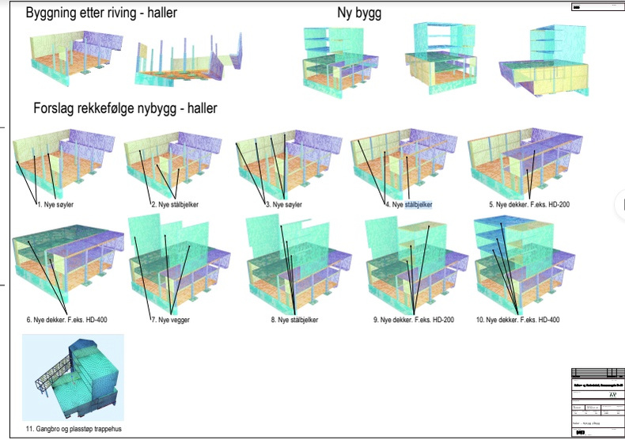
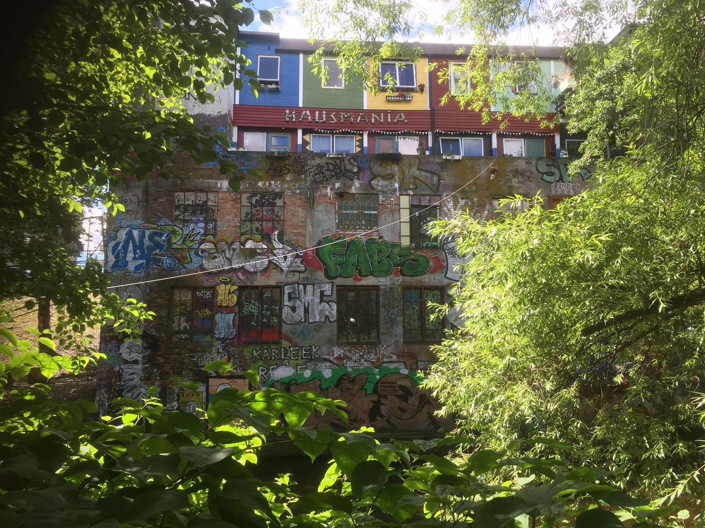

av Chris Erichsen
Gi oss et tørt rom med trefasestrøm,vann og avløp så tar vi det derfra!
Ole Pedersen maner Hausmanias medlemmer til å gå back to basics, til å finne tilbake til pionérånden. Han er medlem av og en drivkraft i den allmøtevalgte kjernegruppa som jobber tett opp mot Oslo kommune og fagmiljøene om nybygget som skal erstatte de gamle hallene som har stått brakk ved elvebredden i rundt ti år.
Bygget skal inneholde arenaer for produksjon og visning av kunst, og oppgraderte studioer og øvingslokaler. Prosessen har vært gjennom ulike faser av medvirkning fra Hausmanias medlemmer og har nå gått inn i en fase der en del av visjonene dessverre må nedskaleres, av økonomiske grunner.
Men dette mener Ole det ikke er noen grunn til å verken deppe eller hisse seg opp over. Mer om det seinere.
Tøyenløftet
Jeg treffer ham på Tøyen torg, den stedlige kjernen og kraftfeltet i det Ole Pedersen driver med til daglig, ved siden av engasjementet på Hausmania. Det er byutvikling, sett og drevet fram nedenfra, som utgjør kjernen i engasjementet hans. Så har han da også kalt det sosiale foretaket han driver, nettopp Nedenfra.
- Takk for den, den tar jeg gjerne som slogan! sier han. Vi sitter på en kafé rett ved den gamle blokka som, i regi av Tøyen boligbyggelag, forhåpentligvis skal bli en modell for en framtidig mer sosial boligsektor i Oslo sentrum.
Noe som, ifølge Ole, vil være en forutsetning for å redde det såkalte Tøyenløftet, selve forhandlingskortet for flyttingen av Munchmuseet til Bjørvika.
Kontinuitet
Men går ikke sånne ting i bølger da? Vi kan vel fort bli enige om at allmøtet, med sitt svake og kaotiske oppmøte, ikke utgjør noe solid tyngdepunkt for tida. Huset har eksistert i over 20 år, startet som et initiativ nedenfra og har vært gjennom flere kamper med kraftig mobilisering.
Nå lever vi i tilsynelatende fredelige tider, huset er offentlig anerkjent og finansiert og det skal bygges nye haller finansiert av og i samarbeid med kommunen. Vi har ikke så mange fiender lenger som vi må mobilisere mot - noe som selvsagt fort kan endre seg.
De nye hallene
Noe av det som har skapt entusiasme på Hausmania de siste åra er visjonen om de nye hallene som skal reise seg på ruinene av de gamle. I øyeblikket virker det som det er litt forvirring om hvor vi står og hvordan medvirkningsprosessen fungerer. Så hva er ståa nå?
Et tørt rom
- Ikke for det, vi drømmer jo om masse verksteder og ulike typer prosjektrom. Men det er det ikke penger til nå, så da ender vi opp med det vi sa i begynnelsen. Sånn sett har det vært en litt rar prosess, men den har også vært veldig nyttig og lærerik.
Så i avslutningen av optimaliseringen kom vi fram til at dersom vi ferdigstiller alt som skal være over bakken og stripper hallen under bakken ned til det minimale av det vi trenger: et tørt rom, så er vi i nærheten av budsjettet. Og da var tanken at vi i framtida skal kunne søke trinn for trinn hos Kulturrå...

